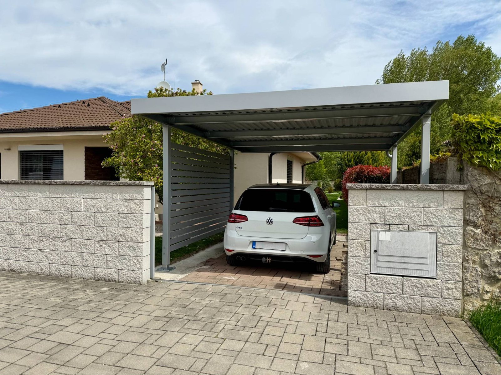

Prístrešok Koverta 4 × 6 m
Prístrešok so šírkou 4 m a hĺbkou 6 m zakryje 24.0 m² a pohodlne pod ním zaparkujete jedno auto. Je to katalógový rozmer so základnou cenou; konečnú cenu potvrdíme podľa podkladu, farby a doplnkov.
- od 5 997 € Základná cena s DPH Doprava aj montáž v cene.
- 24,0 m² Zakrytá plocha 4 m šírka × 6 m hĺbka.
- 0 € Zameranie a ponuka Nezáväzne, aj keď si vyberiete inak.
- 1 deň Montáž Štandardný prístrešok stojí za deň.

Hĺbka 6 m stačí na bežné osobné auto aj s priestorom na otvorenie dverí a obchôdzku okolo. Pri šírke 4 m ostáva miesto aj na bicykle alebo smetné nádoby pri stĺpe.
Uvedená cena je cena základnej zostavy. Konečnú sumu ovplyvní zvolený odtieň, pripravenosť podkladu a doplnky; potvrdíme ju v nezáväznej ponuke.
Kompletné riešenie na kľúč. Koverta je oceľový prístrešok vyrábaný na Slovensku. Súčasťou riešenia je nosná konštrukcia s povrchovou ochranou, strecha, integrované odvodnenie, doprava, odborná montáž a bezplatné zameranie. Rozmer upravíme podľa pozemku, parkovania alebo terasy a pripravíme cenovú ponuku pre realizáciu kdekoľvek na Slovensku.